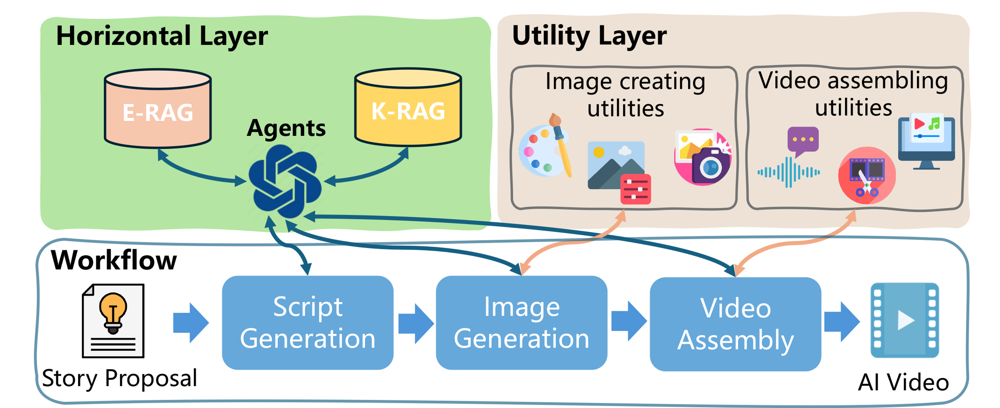
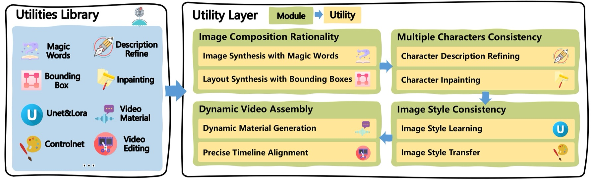

Main Body

Figure 1: Overview of AesopAgent. This system would convert the user story proposal into a video assembled with images, audio, narration, and special
effects. The video generation workflow suggested by AesopAgent, utilizing agent-based approaches and RAG techniques,
encompasses script generation, image generation, and video assembly.
AesopAgent utilizes agent-based approaches and RAG techniques, coupled with the incorporation of expert insights, to
facilitate an iterative evolutionary process that results in an efficient workflow. This workflow creates high-quality
videos from user story proposals automatically. As illustrated in Figure 1, upon receiving a user's “Dragon Story”
proposal, AesopAgent employs the well-designed workflow by agents implemented with RAGs, including script generation,
image generation, and video assembly, ultimately generates a high-quality dragon story video.

Figure 2: Illustration of the AesopAgent framework. The bottom part of the figure shows the workflow from the user story proposal to the video, and the top part shows the main components of our method: the Horizontal Layer and the Utility Layer. The Horizontal Layer is responsible for leveraging agent and RAG techniques, optimizing workflow and prompts, and optimizing utilities usage, and the Utility Layer is responsible for providing utilities for image generation and video assembly steps.

Figure 3: The illustration of Utility Layer. The Utility Layer contains four modules, i.e., image composition rationality, multiple characters consistency, image style consistency, and dynamic video assembly. Each module has some utilities from the utilities library, and these utilities are created and optimized by the Horizontal Layer.

Figure 4: Qualitative results of different methods on image generation. We show the generated images from two stories (i.e., "Goldilocks" and "Epaminondas and Auntie") from SDXL, ComicAI, and our AesopAgent. Specifically, the generated images from different AesopAgent's utility modules are shown in Columns 3 to 6 (note that improvements of the below modules include the improvements of above modules).